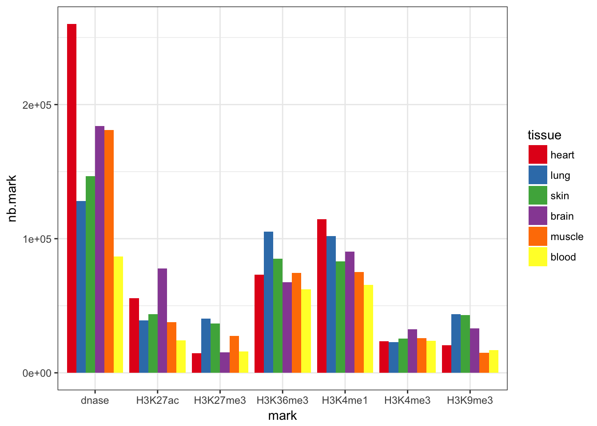
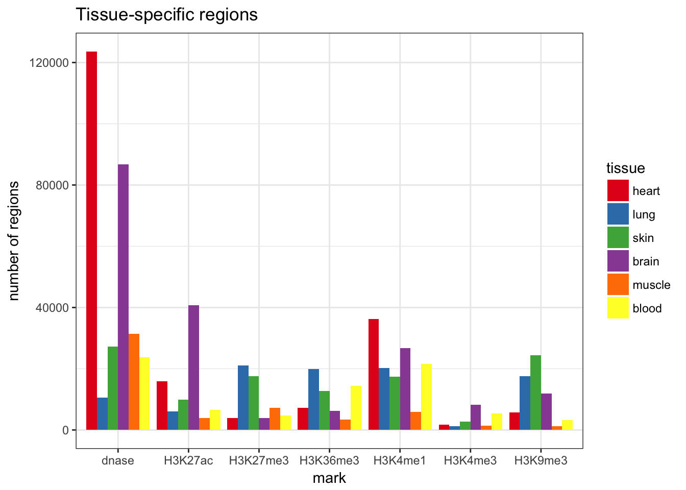
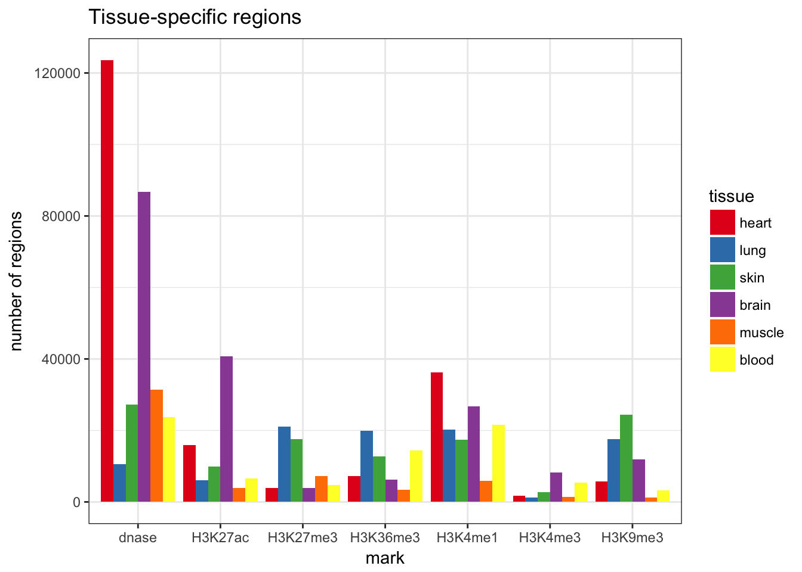

Summary epigenetic mark tracks
Sep 6 2016 genome data epigeneticTo assess the potential impact of variants (SNV, SVs) we might want to use some of the public epigentic datasets. The amount and heterogeneity of this data is a bit overwhelming. I would like to get a summary of which regions of the genome are the most functionally important.
The plan is to:
- get annotated peaks
- for the 6 typical histone marks
- in 5-6 tissues, merging sub-tissues (e.g. brain subregions)
- keep regions supported by enough replicates
Eventually, I could also annotate the regions that are tissue-specific or shared across tissues.
The R-markdown source code is in the website’s GitHub.
AnnotationHub
I’ll use the AnnotationHub package, which links Encode and EpigenomeRoadmap data (and more) directly in R.
I search for narrowPeak in hg19 from H3K27ac, H3K27me3, H3K36me3, H3K4me1, H3K4me3 or H3K9me3, in brain, blood, liver, muscle, lung, kidney, skin or heart. I also look for DNase peaks. Let’s see if I can find what I want.

Most tissues have more than 3 tracks for each histone mark. I’ll just exclude liver and knidney that don’t. DNase is a bit more rare but there is at least one track per tissue. In total, it represents 360 different tracks, that I want to merge into one track per mark/tissue.
Download and merge tracks
For each mark/tissue, I download the available tracks, overlap the peaks into sub-peaks (disjoin) and keep the pieces supported by more than half the tracks. Finally, these recurrent sub-peaks are stitched (reduce) if closer than 500 bp.
Afterwards, the regions for each mark is annotated with the number of tissues with overlapping regions.
The results were uploaded there: https://dl.dropboxusercontent.com/s/8c412u1ug2lwrc2/epiTracks.RData?dl=0.
Overview
 

Limitations
I searched all tracks with keywords \(tissue*, *\)mark (and narrowPeak, hg19). I’m not completely sure that the different tracks come from different replicates. I think I avoided the “bioinformatics” replicates by taking only the narrowPeaks. And when there are different sub-tissues (e.g. for brain), I decided to keep only regions supported by half the tracks, but then I might miss the specific a sub-tissue regions.
I also made some arbitrary choices. For example, in for a particular mark/tissue, I stitch together regions that are at 500 bp or less. The main motivation is to reduce the amount of data. Also, I’m interested in large variants (SVs), so this resolution is fine.